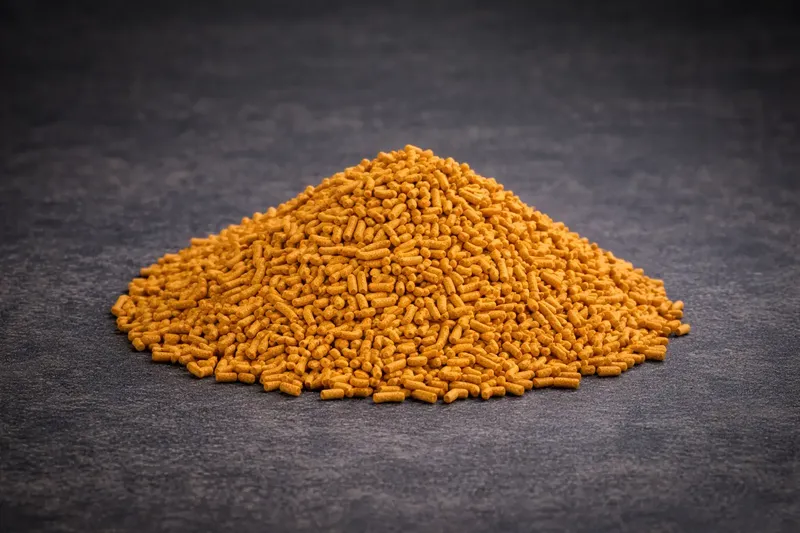

Корм для прудовой рыбы
Корм для рыб Tetra Koi Sticks
Цена и наличие
- 0,3 кг18 BYN / шт.В наличии
- 7,5 кг376 BYN / шт.В наличии
Данные на 23.11.2026.
Характеристики
- По плавучести
- плавающий
Описание
Tetra Koi Sticks - полноценный корм высокого качества для всех видов карпов кои (вуалевые карпы и карпы кои).
Корм для рыб Tetra Koi Sticks предназначен для ежедневного кормления всех видов карпов кои, содержащихся в декоративных прудах и искусственных водоемах. Корм выпускается в форме удобных палочек, которые хорошо подходят для крупных декоративных карпов и позволяют легко контролировать количество корма во время кормления. Tetra Koi Sticks можно использовать для обычных карпов кои, вуалевых кои и других разновидностей декоративных карпов. Корм рекомендуется давать небольшими порциями, которые рыба успевает съесть за короткое время. Количество корма зависит от размера и количества карпов кои, температуры воды и активности рыбы. В теплой воде кои обычно питаются активнее, а при снижении температуры их аппетит уменьшается, поэтому размер порции также стоит сокращать. Если после кормления в пруду остается несъеденный корм, следующую порцию лучше уменьшить. Tetra Koi Sticks подойдет владельцам декоративных прудов, которым нужен готовый корм для карпов кои разных размеров и разновидностей. Палочки удобно дозировать, а во время кормления можно наблюдать за рыбой и оценивать ее аппетит. Корм подходит как для небольших домашних прудов, так и для крупных декоративных водоемов с несколькими карпами кои.
Состав
Состав: растительные продукты, зерновые культуры, экстракты растительного белка, Рыба и побочные рыбные продукты, минеральные вещества, масла и жиры, дрожжи.